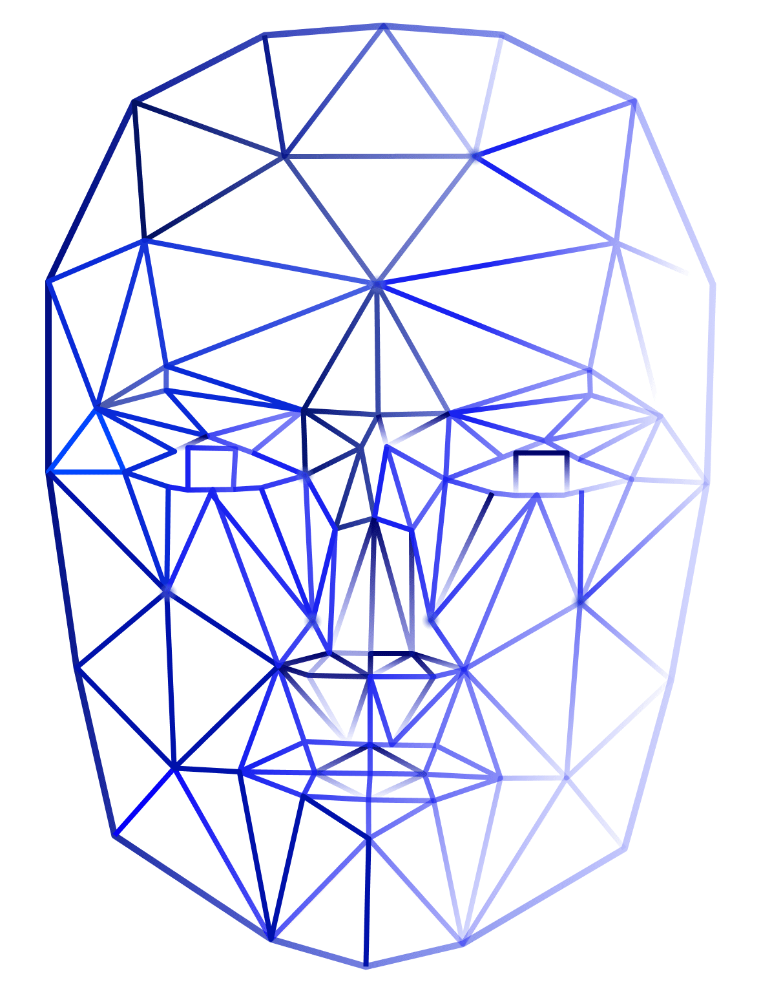

Data Driven
Applied Data Science & Data Engineering
Satellite Communication
Machine Learning with security and Adeverserial Machine Learning

A.I
DeepFake(Video/ Audio) Detection
Time Series Anomaly / Outlier Detection

Security & HCI
Online User Privacy/Abuse & Fake info detection
Blockchain and Authentication
Usable Security(Human Factors in CyberSecurity)